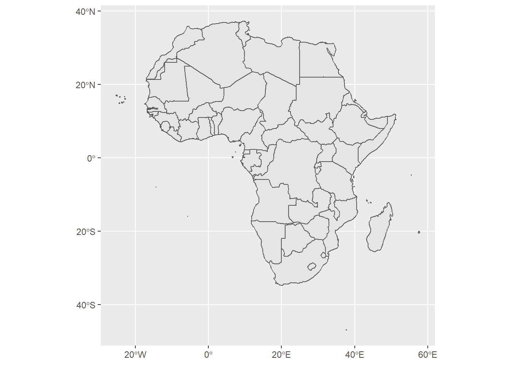
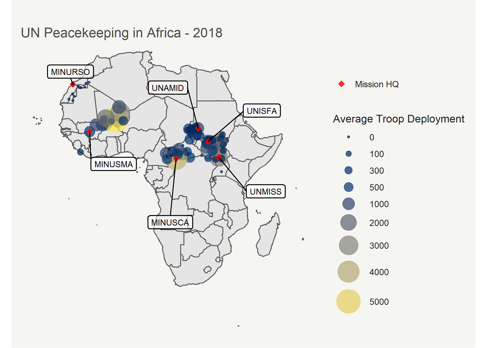
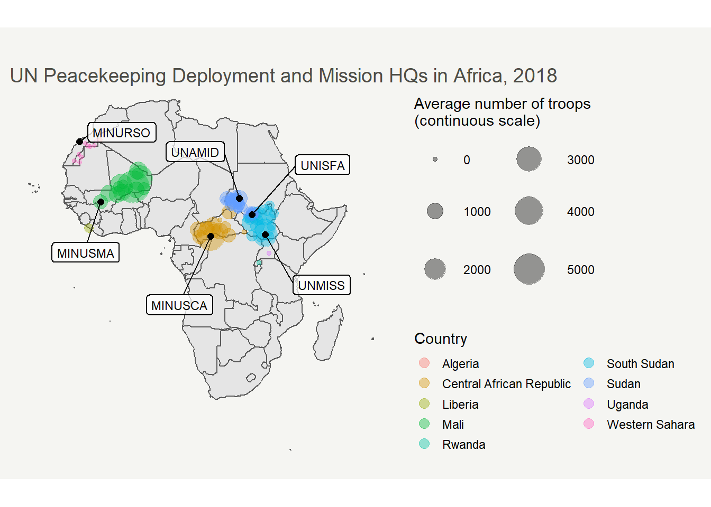
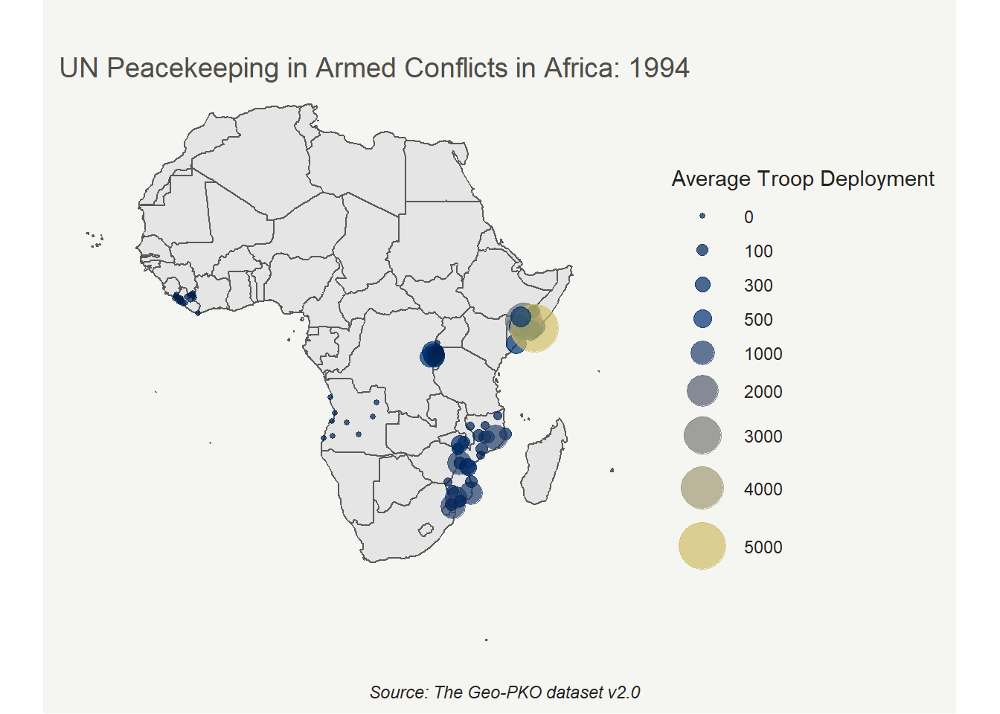
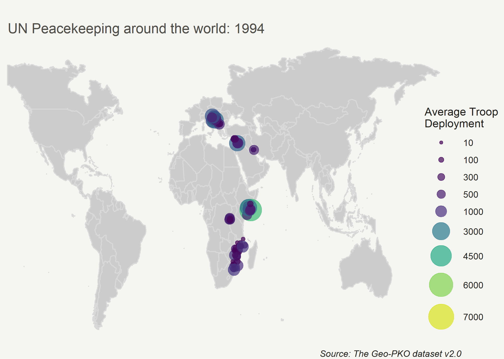

Last updated: 2020-12-10
Checks: 7 0
Knit directory: GeoPKO/
This reproducible R Markdown analysis was created with workflowr (version 1.6.2). The Checks tab describes the reproducibility checks that were applied when the results were created. The Past versions tab lists the development history.
Great! Since the R Markdown file has been committed to the Git repository, you know the exact version of the code that produced these results.
Great job! The global environment was empty. Objects defined in the global environment can affect the analysis in your R Markdown file in unknown ways. For reproduciblity it’s best to always run the code in an empty environment.
The command set.seed(20200629) was run prior to running the code in the R Markdown file. Setting a seed ensures that any results that rely on randomness, e.g. subsampling or permutations, are reproducible.
Great job! Recording the operating system, R version, and package versions is critical for reproducibility.
Nice! There were no cached chunks for this analysis, so you can be confident that you successfully produced the results during this run.
Great job! Using relative paths to the files within your workflowr project makes it easier to run your code on other machines.
Great! You are using Git for version control. Tracking code development and connecting the code version to the results is critical for reproducibility.
The results in this page were generated with repository version 2d02047. See the Past versions tab to see a history of the changes made to the R Markdown and HTML files.
Note that you need to be careful to ensure that all relevant files for the analysis have been committed to Git prior to generating the results (you can use wflow_publish or wflow_git_commit). workflowr only checks the R Markdown file, but you know if there are other scripts or data files that it depends on. Below is the status of the Git repository when the results were generated:
Ignored files:
Ignored: .DS_Store
Ignored: .Rhistory
Ignored: .Rproj.user/
Untracked files:
Untracked: animatedgraph-1.gif
Note that any generated files, e.g. HTML, png, CSS, etc., are not included in this status report because it is ok for generated content to have uncommitted changes.
These are the previous versions of the repository in which changes were made to the R Markdown (analysis/viz.Rmd) and HTML (docs/viz.html) files. If you’ve configured a remote Git repository (see ?wflow_git_remote), click on the hyperlinks in the table below to view the files as they were in that past version.
| File | Version | Author | Date | Message |
|---|---|---|---|---|
| html | 2d02047 | Lou van Roozendaal | 2020-12-10 | Build site. |
| Rmd | d5e9ca3 | Lou van Roozendaal | 2020-12-10 | wflow_publish(“analysis/viz.Rmd”) |
| html | 885e0d5 | Nguyen Ha | 2020-12-09 | Build site. |
| html | c101c6a | Nguyen Ha | 2020-12-09 | Build site. |
| Rmd | 7651c0e | Nguyen Ha | 2020-12-09 | test |
| html | 3452301 | Nguyen Ha | 2020-12-09 | Build site. |
| Rmd | 1a9c013 | Nguyen Ha | 2020-12-09 | test |
| html | 70e0045 | Nguyen Ha | 2020-12-09 | Build site. |
| Rmd | bae7019 | Nguyen Ha | 2020-12-09 | test |
| html | 8c37f94 | Nguyen Ha | 2020-12-09 | Build site. |
| Rmd | 5d5a409 | Nguyen Ha | 2020-12-09 | test |
| html | 220b932 | Nguyen Ha | 2020-12-09 | Build site. |
| Rmd | 344e1b4 | Nguyen Ha | 2020-12-09 | viz page |
| html | 263d508 | Nguyen Ha | 2020-12-09 | Build site. |
| Rmd | 5df9dc7 | Nguyen Ha | 2020-12-09 | adding menu |
| Rmd | 3059f09 | Nguyen Ha | 2020-12-09 | merged, also fixed outwidth |
| html | 45cb643 | Nguyen Ha | 2020-12-09 | Build site. |
| Rmd | 50f6da4 | Nguyen Ha | 2020-12-09 | viz page |
| html | 44524dd | Nguyen Ha | 2020-12-09 | Build site. |
| Rmd | 06e234a | Nguyen Ha | 2020-12-09 | viz page |
| html | 2fb3d57 | Nguyen Ha | 2020-12-09 | Build site. |
| Rmd | 98507d9 | Nguyen Ha | 2020-12-09 | viz page |
| html | 242a288 | Nguyen Ha | 2020-12-09 | Build site. |
| Rmd | 146386d | Nguyen Ha | 2020-12-09 | test |
| html | cd40ce2 | Nguyen Ha | 2020-12-09 | Build site. |
| Rmd | 8be1709 | Nguyen Ha | 2020-12-09 | test |
| html | 1e9a544 | Nguyen Ha | 2020-12-09 | Build site. |
| Rmd | 7a7271b | Nguyen Ha | 2020-12-09 | merging gallery |
| html | 7a7271b | Nguyen Ha | 2020-12-09 | merging gallery |
| Rmd | 6a20fd9 | Lou van Roozendaal | 2020-12-04 | update global animated map |
| html | a966566 | Nguyen Ha | 2020-12-03 | Build site. |
| Rmd | eafa002 | Nguyen Ha | 2020-12-03 | adapting to new dataset version |
| html | acee4ed | Nguyen Ha | 2020-11-25 | Build site. |
| Rmd | b6fea7a | Nguyen Ha | 2020-11-25 | Revised viz, index, incorporated merge attempt 2.rmd |
| html | 2011bda | Nguyen Ha | 2020-11-25 | Build site. |
| Rmd | f2f9e90 | Nguyen Ha | 2020-11-25 | Before building with wflowr |
| html | f2f9e90 | Nguyen Ha | 2020-11-25 | Before building with wflowr |
| html | 7447d5c | Nguyen Ha | 2020-08-13 | Build site. |
| Rmd | 03c6897 | Nguyen Ha | 2020-08-13 | wflow_publish(all = TRUE) |
| html | 34eb60e | Nguyen Ha | 2020-08-13 | Build site. |
| Rmd | 4343536 | Nguyen Ha | 2020-08-13 | wflow_git_commit(all = TRUE) |
| html | 9a57942 | Nguyen Ha | 2020-08-13 | Build site. |
| Rmd | 3c3a981 | Nguyen Ha | 2020-08-13 | Updating new maps, new pages |
An advantage to the Geo-PKO dataset is that it records the numbers of troops by their specific deployment locations. Therefore, users can quickly visualize where active troops are in a mission, be it for a specific mission or a region. Below are some examples of visualization.
To start with, we can take a snapshot of the deployment of all the missions that were active in 2018 in Africa. We start by pulling the shapefiles for country outlines from the package rnaturalearth, and filter for countries in Africa.
library(rnaturalearth)
library(rnaturalearthdata)
library(sf)
world <- ne_countries(scale = "medium", returnclass = "sf")
library(dplyr)
AFR_sf <- world %>% filter(region_un == "Africa")Did that work? We can plot the shapefiles to find out.
library(ggplot2)
ggplot(data=AFR_sf) + geom_sf()
Next, we need to subset the main dataset to include only entries (1) for the year of 2018 and (2) in the continent Africa, all with (3) our variables of interests. Geo-PKO reports deployment sizes according to the available maps published by the UN. Therefore, to obtain the numbers of troop deployment at the yearly level, we calculate the average number of troops per location over the months recorded. We should end up with something similar to the table below.
library(readr)
library(knitr)
library(kableExtra)
GeoPKO <- readr::read_csv("data/Geo_PKO_v2.0.csv", col_types = cols(.default="c"))
GeoPKO2018 <- GeoPKO %>% filter(year==2018) %>%
select(mission, year, location, latitude, longitude, no.troops, hq, country) %>%
mutate_at(vars(latitude, longitude, no.troops), as.numeric) %>%
group_by(location, mission, latitude, longitude) %>%
mutate(YearlyAverage = round(mean(no.troops, na.rm=TRUE))) %>%
arrange(desc(hq)) %>% slice(1)
kable(GeoPKO2018, caption = "An extract of the 2018 dataframe") %>% kable_styling() %>%
scroll_box(width = "100%", height = "200px")| mission | year | location | latitude | longitude | no.troops | hq | country | YearlyAverage |
|---|---|---|---|---|---|---|---|---|
| UNISFA | 2018 | Abyei Camp | 9.6270950 | 28.434498 | 1050 | 3 | Sudan | 1170 |
| MONUSCO | 2018 | Adikivu | -2.3257290 | 28.812325 | 1250 | 2 | DRC | 796 |
| UNISFA | 2018 | Agany Toak | 9.5274830 | 28.434313 | 35 | 0 | Sudan | 35 |
| UNISFA | 2018 | Agok | 9.3574860 | 28.582579 | 70 | 0 | Sudan | 91 |
| MINUSMA | 2018 | Aguelhok | 19.4613900 | 0.858890 | 335 | 0 | Mali | 335 |
| MINURSO | 2018 | Agwanit | 22.1934000 | -13.140930 | 0 | 0 | Western Sahara | 0 |
| UNAMID | 2018 | Al Da’ein | 11.4618600 | 26.125830 | 370 | 2 | Sudan | 269 |
| UNISFA | 2018 | Alal | 9.7936640 | 28.339436 | 150 | 0 | Sudan | 150 |
| MINUSMA | 2018 | Ansongo | 15.6597000 | 0.502200 | 950 | 0 | Mali | 950 |
| UNFICYP | 2018 | Athienou | 35.0618300 | 33.541660 | 35 | 0 | Cyprus | 35 |
| UNISFA | 2018 | Athony | 9.4705590 | 28.464043 | 335 | 2 | Sudan | 335 |
| UNMISS | 2018 | Aweil | 8.7681570 | 27.400190 | 150 | 0 | South Sudan | 150 |
| MINURSO | 2018 | Awsard | 22.5516390 | -14.331643 | 0 | 0 | Western Sahara | 0 |
| MINUSMA | 2018 | Bamako | 12.6500000 | -8.000000 | 705 | 3 | Mali | 705 |
| MINUSCA | 2018 | Bambari | 5.7638800 | 20.670733 | 800 | 0 | Central African Republic | 1017 |
| MINUSCA | 2018 | Bangassou | 4.7379210 | 22.816399 | 650 | 0 | Central African Republic | 650 |
| MINUSCA | 2018 | Bangui | 4.3937970 | 18.559861 | 4085 | 3 | Central African Republic | 4308 |
| UNISFA | 2018 | Banton | 9.5063890 | 28.470323 | 335 | 0 | Sudan | 335 |
| MONUSCO | 2018 | Baraka | -4.1043250 | 29.089285 | 150 | 0 | DRC | 150 |
| MINUSCA | 2018 | Batangafo | 7.3009280 | 18.289260 | 0 | 0 | Central African Republic | 0 |
| MONUSCO | 2018 | Bendera | -5.0655560 | 28.915556 | 150 | 0 | DRC | 150 |
| MONUSCO | 2018 | Beni | 0.5000000 | 29.466667 | 800 | 1 | DRC | 633 |
| MONUSCO | 2018 | Beni Boikene | 0.5402770 | 29.489585 | 0 | 1 | DRC | 0 |
| UNMISS | 2018 | Bentiu | 9.2599050 | 29.800110 | 1450 | 2 | South Sudan | 1450 |
| MINUSMA | 2018 | Ber | 16.8349270 | -2.531944 | 150 | 0 | Mali | 150 |
| MINUSCA | 2018 | Berberati | 4.2573560 | 15.787821 | 650 | 0 | Central African Republic | 650 |
| MINURSO | 2018 | Bir Lahlou | 26.3268627 | -9.549474 | 0 | 0 | Western Sahara | 0 |
| MINUSCA | 2018 | Birao | 10.2932620 | 22.782273 | 650 | 0 | Central African Republic | 650 |
| MONUSCO | 2018 | Bogoro | 1.4102150 | 30.279670 | 150 | 0 | DRC | 150 |
| UNMISS | 2018 | Bor | 6.2059310 | 31.556326 | 1750 | 2 | South Sudan | 1750 |
| MINUSCA | 2018 | Bossangoa | 6.4975080 | 17.450452 | 650 | 0 | Central African Republic | 650 |
| MINUSCA | 2018 | Bouar | 5.9430660 | 15.598526 | 1100 | 2 | Central African Republic | 1050 |
| MINUSCA | 2018 | Bria | 6.5390230 | 21.991110 | 150 | 2 | Central African Republic | 417 |
| MONUSCO | 2018 | Bukavu | -2.5000000 | 28.866667 | 600 | 2 | DRC | 600 |
| MONUSCO | 2018 | Bunia | 1.5625000 | 30.248417 | 1700 | 2 | DRC | 1108 |
| UNMISS | 2018 | Bunji | 9.9466650 | 33.810268 | 150 | 0 | South Sudan | 150 |
| UNAMID | 2018 | Buram | 10.8566980 | 25.159272 | 150 | 0 | Sudan | 150 |
| MONUSCO | 2018 | Butembo | 0.1142830 | 29.301407 | 150 | 0 | DRC | 150 |
| UNDOF | 2018 | Camp Faouar | 33.2388940 | 35.910609 | 520 | 3 | Syria | 432 |
| UNDOF | 2018 | Camp Ziouani | 33.1089360 | 35.816438 | 1485 | 0 | Syria | 1423 |
| MINUJUSTH | 2018 | Cap-Haïtien | 19.7593800 | -72.198150 | NA | 0 | Haiti | NaN |
| MINUSCA | 2018 | Carnot | 4.9397900 | 15.877884 | 0 | 0 | Central African Republic | 0 |
| UNDOF | 2018 | Damascus | 33.5102000 | 36.291280 | 0 | 3 | Syria | 0 |
| MINUSCA | 2018 | Dékoa | 6.3188650 | 19.077846 | 0 | 0 | Central African Republic | 0 |
| UNFICYP | 2018 | Dhenia | 35.1667500 | 33.145990 | 0 | 0 | Cyprus | 0 |
| UNFICYP | 2018 | Dherinia | 35.0648400 | 33.960830 | 35 | 0 | Cyprus | 35 |
| UNISFA | 2018 | Diffra | 10.0392480 | 28.406966 | 335 | 2 | Sudan | 335 |
| UNISFA | 2018 | Dokura | 9.6789860 | 28.458475 | 300 | 2 | Sudan | 300 |
| MINUSMA | 2018 | Douentza | 15.0015500 | -2.949780 | 1100 | 0 | Mali | 1160 |
| UNISFA | 2018 | Dungoup | 9.6291360 | 28.495775 | 150 | 0 | Sudan | 150 |
| MONUSCO | 2018 | Dungu | 3.6166670 | 28.566667 | 950 | 2 | DRC | 733 |
| MINUSMA | 2018 | Dyabali | 14.6937000 | -6.019700 | 1100 | 0 | Mali | 1100 |
| UNAMID | 2018 | El Fasher | 13.6333333 | 25.350000 | 935 | 3 | Sudan | 935 |
| UNAMID | 2018 | El Geneina | 13.4500000 | 22.450000 | 635 | 2 | Sudan | 721 |
| UNAMID | 2018 | El Sireaf | 13.8873030 | 23.517703 | 150 | 0 | Sudan | 150 |
| UNFICYP | 2018 | Famagusta | 35.1248900 | 33.941350 | 150 | 2 | Cyprus | 150 |
| UNISFA | 2018 | Farouk | 10.1109360 | 28.420397 | 150 | 0 | Sudan | 150 |
| MINUJUSTH | 2018 | Fort-Liberté | 19.6627300 | -71.837980 | 0 | 0 | Haiti | 0 |
| MINUSMA | 2018 | Gao | 16.2716700 | -0.044720 | 5635 | 2 | Mali | 5605 |
| UNISFA | 2018 | Gok-machar | 9.2154120 | 26.859909 | 0 | 2 | Sudan | 0 |
| UNISFA | 2018 | Goli | 9.8485970 | 28.477926 | 220 | 0 | Sudan | 220 |
| UNAMID | 2018 | Golo | 13.1322800 | 24.280820 | 150 | 0 | Sudan | 188 |
| MONUSCO | 2018 | Goma | -1.6833330 | 29.233333 | 1550 | 2 | DRC | 1008 |
| MINUJUSTH | 2018 | Gonaïves | 19.4475500 | -72.689280 | NA | 0 | Haiti | NaN |
| MINUSMA | 2018 | Gossi | 15.8229940 | -1.300646 | 150 | 0 | Mali | 150 |
| MINUSMA | 2018 | Goundam | 16.4145300 | -3.670750 | 300 | 0 | Mali | 300 |
| UNAMID | 2018 | Graida | 11.3394850 | 25.139697 | 300 | 1 | Sudan | 225 |
| UNISFA | 2018 | Highway | 9.5526470 | 28.467694 | 150 | 0 | Sudan | 270 |
| MONUSCO | 2018 | Himbe | -1.4326730 | 28.888605 | 300 | 0 | DRC | 300 |
| MONUSCO | 2018 | Himbi | -1.6367610 | 29.247930 | 300 | 0 | DRC | 300 |
| MINUJUSTH | 2018 | Hinche | 19.1500000 | -72.016670 | 0 | 0 | Haiti | 0 |
| MINUJUSTH | 2018 | Jacmel | 18.2342700 | -72.535390 | 0 | 0 | Haiti | 0 |
| MINUJUSTH | 2018 | Jérémie | 18.6500000 | -74.116670 | NA | 0 | Haiti | NaN |
| UNMISS | 2018 | Juba | 4.8459720 | 31.601203 | 3350 | 3 | South Sudan | 2830 |
| UNAMID | 2018 | Kabkabiya | 13.6474600 | 24.086729 | 185 | 1 | Sudan | 214 |
| UNISFA | 2018 | Kadugli | 11.0105960 | 29.713688 | 0 | 2 | Sudan | 0 |
| MINUSCA | 2018 | Kaga Bandoro | 6.9959470 | 19.184232 | 1100 | 2 | Central African Republic | 1100 |
| MONUSCO | 2018 | Kalemie | -5.9033440 | 29.192303 | 650 | 0 | DRC | 700 |
| UNAMID | 2018 | Kalma | 12.0155960 | 24.998158 | 150 | 0 | Sudan | 150 |
| MONUSCO | 2018 | Kamango | 0.6177730 | 29.901965 | 150 | 0 | DRC | 150 |
| MONUSCO | 2018 | Kamanyola | -2.7404250 | 29.004775 | 150 | 0 | DRC | 150 |
| MONUSCO | 2018 | Kampala | 0.3155556 | 32.565556 | 0 | 0 | Uganda | 0 |
| MONUSCO | 2018 | Kananga | -5.9000000 | 22.416667 | 300 | 0 | DRC | 175 |
| MONUSCO | 2018 | Kanyabayonga | -0.7111110 | 29.173056 | 150 | 0 | DRC | 150 |
| UNAMID | 2018 | Kas | 12.5000000 | 24.283333 | 150 | 0 | Sudan | 150 |
| UNFICYP | 2018 | Kato Pyrgos | 35.1782400 | 32.684920 | 0 | 0 | Cyprus | 0 |
| MONUSCO | 2018 | Kavumu | -2.3027780 | 28.816111 | 625 | 0 | DRC | 569 |
| UNAMID | 2018 | Khor Abeche | 12.6602080 | 25.337603 | 300 | 1 | Sudan | 262 |
| MINUSMA | 2018 | Kidal | 18.4411100 | 1.407780 | 3135 | 2 | Mali | 3163 |
| MONUSCO | 2018 | Kigali | -1.9546000 | 30.061000 | 0 | 0 | Rwanda | 0 |
| MONUSCO | 2018 | Kinshasa | -4.3297220 | 15.315000 | 1400 | 3 | DRC | 1200 |
| MONUSCO | 2018 | Kisangani | 0.5000000 | 25.200000 | 150 | 2 | DRC | 150 |
| MONUSCO | 2018 | Kiwanja | -1.1400000 | 29.439445 | 650 | 0 | DRC | 483 |
| MONUSCO | 2018 | Komanda | 1.3623420 | 29.776738 | 150 | 0 | DRC | 150 |
| MONUSCO | 2018 | Kongolo | -5.3833330 | 27.000000 | 35 | 0 | DRC | 35 |
| UNAMID | 2018 | Korma | 13.8333333 | 24.733333 | 185 | 0 | Sudan | 185 |
| UNMIK | 2018 | Kosovska Mitrovica | 42.8833300 | 20.866670 | 0 | 2 | Kosovo | 0 |
| UNMISS | 2018 | Kuacjok | 8.3040400 | 27.993269 | 150 | 0 | South Sudan | 150 |
| UNAMID | 2018 | Kutum | 14.2000000 | 24.666667 | 300 | 0 | Sudan | 300 |
| MINURSO | 2018 | Laayoune | 27.1350000 | -13.162500 | 35 | 3 | Western Sahara | 35 |
| UNAMID | 2018 | Labado | 12.0908920 | 25.410895 | 300 | 0 | Sudan | 300 |
| UNMISS | 2018 | Leer | 8.3017900 | 30.141790 | 150 | 0 | South Sudan | 150 |
| UNFICYP | 2018 | Leonarisso | 35.4689200 | 34.138860 | 0 | 0 | Cyprus | 0 |
| MINUJUSTH | 2018 | Les Cayes | 18.1933100 | -73.746010 | 0 | 0 | Haiti | 0 |
| UNFICYP | 2018 | Linou | 35.0785600 | 32.904700 | 0 | 0 | Cyprus | 0 |
| MONUSCO | 2018 | Lubumbashi | -11.6666670 | 27.466667 | 150 | 2 | DRC | 150 |
| UNISFA | 2018 | Madingthon | 9.6013440 | 28.431379 | 70 | 0 | Sudan | 70 |
| MINURSO | 2018 | Mahbas | 27.4242670 | -9.065980 | 0 | 0 | Western Sahara | 0 |
| UNMISS | 2018 | Malakal | 9.5334240 | 31.660485 | 2050 | 2 | South Sudan | 1930 |
| MONUSCO | 2018 | Manono | -7.3000000 | 27.416667 | 150 | 0 | DRC | 150 |
| UNISFA | 2018 | Marial Achak | 9.4793280 | 28.624917 | 150 | 0 | Sudan | 150 |
| UNIFIL | 2018 | Maritime Task Force | 33.1216998 | 35.134000 | NA | 0 | Lebanon | NaN |
| UNAMID | 2018 | Masteri | 13.1166667 | 22.150000 | 150 | 0 | Sudan | 150 |
| MONUSCO | 2018 | Mavivi | 0.5861170 | 29.484516 | 335 | 1 | DRC | 902 |
| MONUSCO | 2018 | Mayimoya | 0.7651220 | 29.569722 | 150 | 0 | DRC | 150 |
| MONUSCO | 2018 | Mbuji-Mayi | -6.1500000 | 23.600000 | 150 | 0 | DRC | 150 |
| MINURSO | 2018 | Mehaires | 26.1472000 | -11.069200 | 0 | 0 | Western Sahara | 0 |
| UNMISS | 2018 | Melut | 10.4417950 | 32.200806 | 150 | 0 | South Sudan | 150 |
| MINUSMA | 2018 | Ménaka | 15.9182000 | 2.402200 | 450 | 0 | Mali | 450 |
| UNAMID | 2018 | Menawashi | 12.6666700 | 24.983330 | 150 | 0 | Sudan | 150 |
| MINURSO | 2018 | Mijek | 23.4735871 | -12.759754 | 0 | 0 | Western Sahara | 0 |
| MINUJUSTH | 2018 | Miragoâne | 18.4459900 | -73.089570 | NA | 0 | Haiti | NaN |
| MONUSCO | 2018 | Moba | -7.0666670 | 29.766667 | 35 | 0 | DRC | 35 |
| MONUSCO | 2018 | Monigi Camp | -1.6349200 | 29.248316 | 300 | 0 | DRC | 300 |
| UNMIL | 2018 | Monrovia | 6.3105560 | -10.804722 | 150 | 0 | Liberia | 150 |
| MINUSMA | 2018 | Mopti/Sevare | 14.5274200 | -4.093440 | 950 | 0 | Mali | 950 |
| UNAMID | 2018 | Mournei | 12.9500000 | 22.866667 | 150 | 0 | Sudan | 150 |
| UNDOF | 2018 | Mt Hermon Base | 33.3597330 | 35.820466 | 150 | 0 | Syria | 173 |
| UNAMID | 2018 | Mukhjar | 11.9571480 | 23.269138 | 300 | 0 | Sudan | 300 |
| MONUSCO | 2018 | Mushake | -1.5281580 | 28.979520 | 150 | 0 | DRC | 150 |
| UNIFIL | 2018 | Naqoura | 33.1117970 | 35.125602 | 2200 | 3 | Lebanon | 2200 |
| UNMISS | 2018 | Nasser | 8.6000000 | 33.066667 | 150 | 0 | South Sudan | 150 |
| MINUSCA | 2018 | Ndélé | 8.4110470 | 20.647584 | 0 | 0 | Central African Republic | 0 |
| MONUSCO | 2018 | Ndromo | -1.3595120 | 28.733120 | 650 | 0 | DRC | 650 |
| UNAMID | 2018 | Nertiti | 12.9632500 | 24.047643 | 950 | 0 | Sudan | 950 |
| UNFICYP | 2018 | Nicosia | 35.1694400 | 33.360810 | 150 | 2 | Cyprus | 150 |
| UNISFA | 2018 | Noong | 9.7033280 | 28.452392 | 300 | 0 | Sudan | 300 |
| UNAMID | 2018 | Nyala | 12.0500000 | 24.883333 | 970 | 2 | Sudan | 869 |
| MINUSCA | 2018 | Obo | 5.3956700 | 26.491755 | 0 | 0 | Central African Republic | 0 |
| MINURSO | 2018 | Oum Dreyga | 24.1666670 | -13.250000 | 0 | 0 | Western Sahara | 0 |
| MINUSCA | 2018 | Paoua | 7.2473780 | 16.434391 | 0 | 0 | Central African Republic | 0 |
| UNMISS | 2018 | Pariang | 9.9154200 | 29.981090 | 150 | 0 | South Sudan | 150 |
| UNMISS | 2018 | Pibor | 6.7985290 | 33.130445 | 150 | 0 | South Sudan | 150 |
| MINUJUSTH | 2018 | Port-au-Prince | 18.5434900 | -72.338810 | NA | 0 | Haiti | NaN |
| MINUJUSTH | 2018 | Port-de-Paix | 19.9398400 | -72.830370 | 0 | 0 | Haiti | 0 |
| UNIFIL | 2018 | Position 1-0A | 33.1083330 | 35.209167 | 300 | 0 | Lebanon | 300 |
| UNIFIL | 2018 | Position 1-26 | 33.1695210 | 35.185870 | 150 | 1 | Lebanon | 150 |
| UNIFIL | 2018 | Position 2-1 | 33.2576090 | 35.312757 | 450 | 1 | Lebanon | 450 |
| UNIFIL | 2018 | Position 2-3 | 33.1521074 | 35.197265 | 1250 | 2 | Lebanon | 1250 |
| UNIFIL | 2018 | Position 2-31 | 33.1559650 | 35.196764 | 150 | 0 | Lebanon | 150 |
| UNIFIL | 2018 | Position 2-45 | 33.1291670 | 35.391389 | 600 | 1 | Lebanon | 600 |
| UNIFIL | 2018 | Position 2-5 | 33.2776120 | 35.249281 | 600 | 1 | Lebanon | 600 |
| UNIFIL | 2018 | Position 4-2 | 33.3688890 | 35.623056 | 150 | 1 | Lebanon | 150 |
| UNIFIL | 2018 | Position 4-28 | 33.2783330 | 35.636111 | 150 | 0 | Lebanon | 150 |
| UNIFIL | 2018 | Position 4-3 | 33.3770720 | 35.640359 | 300 | 0 | Lebanon | 300 |
| UNIFIL | 2018 | Position 4-30 | 33.3265710 | 35.641810 | 150 | 0 | Lebanon | 150 |
| UNIFIL | 2018 | Position 4-31 | 33.3115033 | 35.705589 | 150 | 0 | Lebanon | 150 |
| UNIFIL | 2018 | Position 4-7C | 33.3294440 | 35.736667 | 150 | 0 | Lebanon | 150 |
| UNIFIL | 2018 | Position 5-10 | 33.1838310 | 35.231681 | 150 | 0 | Lebanon | 150 |
| UNIFIL | 2018 | Position 5-20 | 33.0898060 | 35.370954 | 150 | 0 | Lebanon | 150 |
| UNIFIL | 2018 | Position 5-42 | 33.1052786 | 35.317299 | 150 | 0 | Lebanon | 150 |
| UNIFIL | 2018 | Position 5-66 | 33.1282430 | 35.350073 | 150 | 1 | Lebanon | 150 |
| UNIFIL | 2018 | Position 6-43 | 33.1910620 | 35.392703 | 150 | 0 | Lebanon | 150 |
| UNIFIL | 2018 | Position 7-1 | 33.2713890 | 35.491667 | 300 | 1 | Lebanon | 300 |
| UNIFIL | 2018 | Position 7-2 | 33.3760410 | 35.616939 | 900 | 2 | Lebanon | 900 |
| UNIFIL | 2018 | Position 7-3 | 33.3810280 | 35.613174 | 450 | 0 | Lebanon | 450 |
| UNIFIL | 2018 | Position 8-30 | 33.1836190 | 35.505105 | 150 | 1 | Lebanon | 150 |
| UNIFIL | 2018 | Position 8-31 | 33.2045920 | 35.485374 | 150 | 0 | Lebanon | 150 |
| UNIFIL | 2018 | Position 8-32 | 33.1966805 | 35.540474 | 150 | 0 | Lebanon | 150 |
| UNIFIL | 2018 | Position 8-33 | 33.2091250 | 35.534695 | 150 | 0 | Lebanon | 150 |
| UNIFIL | 2018 | Position 8-34 | 33.1628270 | 35.524991 | 150 | 0 | Lebanon | 150 |
| UNIFIL | 2018 | Position 8-36 | 33.1299700 | 35.492847 | 150 | 0 | Lebanon | 150 |
| UNDOF | 2018 | Position 80 | 32.9621450 | 35.883407 | 35 | 0 | Syria | 112 |
| UNIFIL | 2018 | Position 9-1 | 33.2638580 | 35.410404 | 450 | 1 | Lebanon | 450 |
| UNIFIL | 2018 | Position 9-10 | 33.2696800 | 35.416412 | 150 | 0 | Lebanon | 150 |
| UNIFIL | 2018 | Position 9-2 | 33.3029797 | 35.449903 | 150 | 0 | Lebanon | 150 |
| UNIFIL | 2018 | Position 9-63 | 33.2456370 | 35.539750 | 150 | 0 | Lebanon | 150 |
| UNIFIL | 2018 | Position 9-66 | 33.3021770 | 35.564996 | 150 | 0 | Lebanon | 150 |
| UNIFIL | 2018 | Position HIN | 33.1049040 | 35.277992 | 150 | 0 | Lebanon | 150 |
| UNMIK | 2018 | Pristina | 42.6727200 | 21.166880 | 0 | 3 | Kosovo | 0 |
| UNFICYP | 2018 | Pyla | 35.0046900 | 33.693810 | 35 | 0 | Cyprus | 35 |
| UNMISS | 2018 | Renk | 11.7431000 | 32.804900 | 150 | 0 | South Sudan | 150 |
| UNISFA | 2018 | Rumajak/Dokura | 9.6789860 | 28.458475 | 300 | 2 | Sudan | 300 |
| UNMISS | 2018 | Rumbek | 6.8019960 | 29.691227 | 650 | 0 | South Sudan | 650 |
| MONUSCO | 2018 | Rwindi | -0.7847220 | 29.290556 | 650 | 0 | DRC | 483 |
| MONUSCO | 2018 | Sake | -1.5736110 | 29.045000 | 2750 | 0 | DRC | 2487 |
| MONUSCO | 2018 | Sange | -3.0915510 | 29.114144 | 650 | 0 | DRC | 650 |
| UNAMID | 2018 | Saraf Omra | 13.4500000 | 23.266667 | 150 | 0 | Sudan | 150 |
| MONUSCO | 2018 | Semuliki Bridge | 0.7392390 | 29.789729 | 255 | 0 | DRC | 255 |
| MONUSCO | 2018 | Shabunda | -2.6915400 | 27.346250 | 150 | 0 | DRC | 150 |
| UNAMID | 2018 | Shaeria | 12.4426150 | 25.586193 | NA | 0 | Sudan | NaN |
| UNAMID | 2018 | Shangil Tobay | 13.0166670 | 25.250000 | 150 | 0 | Sudan | 150 |
| MINUSCA | 2018 | Sibut | 5.7314540 | 19.087667 | 650 | 0 | Central African Republic | 650 |
| UNFICYP | 2018 | Skouriotissa | 35.0917400 | 32.884140 | 150 | 2 | Cyprus | 150 |
| MINURSO | 2018 | Smara | 26.7384100 | -11.671940 | 0 | 0 | Western Sahara | 0 |
| UNAMID | 2018 | Sortony | 13.4505400 | 24.397706 | 185 | 0 | Sudan | 185 |
| UNFICYP | 2018 | Strovilia | 35.0940970 | 33.899095 | 0 | 0 | Cyprus | 0 |
| UNAMID | 2018 | Tawila | 13.5000000 | 24.900000 | 185 | 1 | Sudan | 185 |
| UNISFA | 2018 | Tejalei | 9.6736060 | 28.593325 | 300 | 0 | Sudan | 300 |
| MINUSMA | 2018 | Tessalit | 20.2012600 | 1.011860 | 1320 | 0 | Mali | 1320 |
| MINURSO | 2018 | Tifariti | 26.0927780 | -10.608889 | 0 | 0 | Western Sahara | 0 |
| MINURSO | 2018 | Tindouf | 27.6711100 | -8.147430 | 0 | 0 | Algeria | 0 |
| UNISFA | 2018 | Todach | 9.7347390 | 28.472629 | 520 | 0 | Sudan | 520 |
| MINUSMA | 2018 | Tombouctou (Timbuktu) | 16.7734800 | -3.007420 | 2370 | 2 | Mali | 2370 |
| UNMISS | 2018 | Torit | 4.4133330 | 32.567778 | 300 | 0 | South Sudan | 210 |
| MONUSCO | 2018 | Tshikapa | -6.4232300 | 20.793987 | 150 | 0 | DRC | 150 |
| UNISFA | 2018 | Um Khariet | 9.7781030 | 28.637597 | 150 | 0 | Sudan | 150 |
| UNAMID | 2018 | Umm Barru | 15.0500000 | 23.716667 | NA | 0 | Sudan | NaN |
| UNFICYP | 2018 | UNPA | 35.1585509 | 33.270104 | 255 | 3 | Cyprus | 255 |
| MONUSCO | 2018 | Uvira | -3.3730550 | 29.144967 | 650 | 0 | DRC | 539 |
| MONUSCO | 2018 | Walungu | -2.6283333 | 28.665833 | 650 | 0 | DRC | 483 |
| UNMISS | 2018 | Wau | 7.7028610 | 27.995300 | 950 | 2 | South Sudan | 980 |
| UNFICYP | 2018 | Xeros | 35.1395200 | 32.834310 | 150 | 0 | Cyprus | 150 |
| MINUSCA | 2018 | Yaloke | 5.3150660 | 17.098075 | 0 | 0 | Central African Republic | 0 |
| UNMISS | 2018 | Yambio | 4.5721310 | 28.395488 | 150 | 0 | South Sudan | 270 |
| UNMISS | 2018 | Yei | 4.0950350 | 30.677920 | 150 | 0 | South Sudan | 150 |
| UNAMID | 2018 | Zalingei | 12.9095990 | 23.474061 | 335 | 2 | Sudan | 309 |
Hold up–the data frame still contains missions that did not take place in Africa. We need to filter this out somehow.
library(countrycode)
AFR_list <- codelist %>% filter(continent %in% "Africa") %>% select(country.name.en) %>% pull()
GeoPKO2018_AFR <- GeoPKO2018 %>%
mutate(country=case_when(country=="DRC" ~ "Congo-Kinshasa",
TRUE~ as.character(country))) %>%
filter(country %in% AFR_list)With that set, we can start plotting the deployment locations and their respective sizes for UN peacekeeping missions in Africa in 2018.
library(ggrepel) #to nudge labels nicely away from geom_point
library(viridis) #for pretty colors
library(ggthemes)
ggplot(data=AFR_sf) + geom_sf() +
geom_point(data = GeoPKO2018_AFR, aes(x=longitude, y=latitude,
size=YearlyAverage, color= YearlyAverage), alpha=.7)+
scale_size_continuous(name="Average Troop Deployment", range=c(1,12),
breaks=c(0, 100, 300, 500, 1000, 2000, 3000, 4000,5000)) +
scale_color_viridis(option="cividis",
breaks=c(0, 100, 300, 500, 1000, 2000, 3000, 4000,5000),
name="Average Troop Deployment" ) +
guides( colour = guide_legend()) +
geom_point(data = GeoPKO2018_AFR %>% filter(hq==3), aes (x=longitude, y=latitude, shape="HQ"),
fill = "red", size=2, color="red", alpha=.8)+
scale_shape_manual(values=c(23), labels=c("HQ"="Mission HQ"), name="")+
geom_label_repel(data = GeoPKO2018_AFR %>% filter(hq==3), aes(x=longitude, y=latitude, label=mission),
min.segment.length = 0,
direction="both",
label.size = 0.5,
box.padding = 2,
size = 3,
fill = alpha(c("white"),0.5),
shape=16,
size=2) +
labs(title ="UN Peacekeeping in Africa - 2018", color='Average Troop Deployment') +
theme(
text = element_text(color = "#22211d"),
plot.background = element_rect(fill = "#f5f5f2", color = NA),
panel.background = element_rect(fill = "#f5f5f2", color = NA),
legend.background = element_rect(fill = "#f5f5f2", color = NA),
plot.title = element_text(size= 14, hjust=0.01, color = "#4e4d47", margin = margin(b = -0.1, t = 0.8, l = 4, unit = "cm")),
panel.grid=element_blank(),
axis.title=element_blank(),
axis.ticks=element_blank(),
axis.text=element_blank(),
legend.key=element_blank()
)
Here is a similar visualization, but this time the color aesthetic for geom_point is mapped to shown country instead.
p3 <- ggplot(data=AFR_sf) + geom_sf() +
geom_point(data=GeoPKO2018_AFR,
aes(x=longitude, y=latitude, size=YearlyAverage, color=country), alpha=.4, shape=20)+
geom_point(data=GeoPKO2018_AFR %>% filter(hq==3),
aes(x=longitude, y=latitude),
color="black", shape=16, size=2) +
geom_label_repel(data=GeoPKO2018_AFR %>% filter(hq==3),
min.segment.length = 0.2,
label.size = 0.5,
box.padding = 2,
size = 3,
fill = alpha(c("white"),0.7),
aes(x=longitude, y=latitude, label=mission)) +
labs(title="UN Peacekeeping Deployment and Mission HQs in Africa, 2018")+
scale_size(range = c(2, 16))+
labs(size="Average number of troops\n(continuous scale)",color="Country",shape="HQ")+
theme(
plot.background = element_rect(fill = "#f5f5f2", color = NA),
legend.background = element_rect(fill = "#f5f5f2", color = NA),
plot.title = element_text(size= 14, hjust=0.01, color = "#4e4d47", margin = margin(b = -0.1, t = 0.8, l = 4, unit = "cm")),
panel.grid=element_blank(),
axis.title=element_blank(),
axis.ticks=element_blank(),
axis.text=element_blank(),
panel.background=element_blank(),
legend.key = element_rect(fill = "#f5f5f2", color = NA),
legend.key.size = unit(1, 'lines')
)+
guides(colour=guide_legend(ncol=2,override.aes = list(size=5)),
size=guide_legend(ncol=2))
p3
How has this changed over the period covered by the dataset? An animated graph is great for this purpose. The first step is to prepare a dataframe, much similar to what has been done above for missions taking place in Africa in 2018. First we would calculate the average number of troops that is deployed to a location per mission per year, for every year between 1994 and 2018.
AFR_GIF <- GeoPKO %>%
mutate(country=case_when(country=="DRC" ~ "Congo-Kinshasa",
TRUE~ as.character(country))) %>%
filter(country %in% AFR_list) %>%
select(mission, year, location, latitude, longitude, no.troops, hq) %>%
mutate_at(vars(latitude, longitude), as.numeric) %>%
group_by_at(vars(-no.troops)) %>%
summarise(ave.no.troops = round(mean(as.numeric(no.troops), na.rm=TRUE)))`summarise()` regrouping output by 'mission', 'year', 'location', 'latitude', 'longitude' (override with `.groups` argument)The animated graph is built on the above code for static graphics, using the cool package gganimate.
library(gganimate)
# Transforming the "year" variable into a discrete variable.
AFR_GIF$year <- as.factor(AFR_GIF$year)
ggplot(AFR_sf) + geom_sf() +
geom_point(data = AFR_GIF, aes(x=longitude, y=latitude,
size= ave.no.troops, color= ave.no.troops, group=year), alpha=.7)+
scale_size_continuous(name="Average Troop Deployment", range=c(1,12),
breaks=c(0, 100, 300, 500, 1000, 2000, 3000, 4000,5000)) +
scale_color_viridis(option="cividis",
breaks=c(0, 100, 300, 500, 1000, 2000, 3000, 4000,5000),
name="Average Troop Deployment" ) +
guides(colour = guide_legend()) +
theme(
text = element_text(color = "#22211d"),
plot.background = element_rect(fill = "#f5f5f2", color = NA),
panel.background = element_rect(fill = "#f5f5f2", color = NA),
legend.background = element_rect(fill = "#f5f5f2", color = NA),
plot.title = element_text(size= 14, hjust=0.01, color = "#4e4d47", margin = margin(b = -0.1, t = 0.8, l = 4, unit = "cm")),
panel.grid=element_blank(),
axis.text=element_blank(),
axis.ticks=element_blank(),
axis.title=element_blank(),
legend.key=element_blank(),
plot.caption=element_text(hjust=1, face="italic"))+
transition_states(states=year, transition_length = 3, state_length=3)+
labs(title="UN Peacekeeping in Armed Conflicts in Africa: {closest_state}",
caption="Source: The Geo-PKO dataset v2.0")+
ease_aes()
#run the following command to save the plot
#anim_save("animatedUNPKO.gif", p4)With the release of version 2.0, the Geo-PKO dataset has extended its coverage to missions taking place globally between 1994 and 2019. The above examples are but a few ways through which users can explore and exploit this rich dataset.
The following code shows how to make an animate plot with the global data by year, using the package “animate”.
library(tidyr)
#Create a new dataframe keeping all missions and regions
Global_df <- GeoPKO %>%
select(mission, year, location, latitude, longitude, no.troops) %>%
mutate_at(vars(latitude, longitude, no.troops), as.numeric) %>%
group_by(mission, year, location) %>%
mutate(ave.no.troops = as.integer(mean(no.troops, na.rm=TRUE))) %>%
select(-no.troops) %>% distinct() %>% drop_na(ave.no.troops) %>% filter(ave.no.troops>0)
#Make the year variable discrete
Global_df$year <- as.factor(Global_df$year)
#Make the plot
ggplot() +
borders("world", xlim = c(-130, 120), ylim = c(-40, 50), colour = "gray85", fill = "gray80") +
theme_map()+
geom_point(data = Global_df, aes(x=longitude, y=latitude, size= ave.no.troops, color= ave.no.troops, group=year), alpha=.7)+
scale_size_continuous(name="Average Troop\nDeployment", range=c(1,12), breaks=c(10, 100,300, 500, 1000, 3000, 4500, 6000, 7000)) +
scale_color_viridis(option="viridis", breaks=c(10, 100, 300, 500, 1000, 3000, 4500, 6000, 7000), name="Average Troop\nDeployment" ) +
guides(colour = guide_legend()) +
theme(text = element_text(color = "#22211d"),
legend.position = c(1,0.1),
plot.background = element_rect(fill = "#f5f5f2", color = NA),
panel.background = element_rect(fill = "#f5f5f2", color = NA),
legend.background = element_rect(fill = NA, color = NA),
legend.key = element_rect(fill = NA, color = NA),
plot.title = element_text(size= 14, hjust=0.1, color = "#4e4d47",
margin = margin(b = -0.1, t = 0.8, l = 4, unit = "cm")),
plot.margin=margin(0, 3.5, 0, -0.5, "cm"),
panel.grid=element_blank(),
axis.text=element_blank(),
axis.ticks=element_blank(),
axis.title=element_blank(),
plot.caption=element_text(hjust=1, face="italic")) +
transition_states(states = year, transition_length = 3, state_length=3)+
labs(title="UN Peacekeeping around the world: {closest_state}",
color="Average Deployment Size",
caption="Source: The Geo-PKO dataset v2.0")+
ease_aes()
#Animate the plot
#animate(global_map, height = 400, width =800, fps = 4, res=120)
##To save the plot run the following line of code
#anim_save("Animated_GeoPKO2.0.gif")
sessionInfo()R version 4.0.3 (2020-10-10)
Platform: x86_64-apple-darwin17.0 (64-bit)
Running under: macOS High Sierra 10.13.6
Matrix products: default
BLAS: /Library/Frameworks/R.framework/Versions/4.0/Resources/lib/libRblas.dylib
LAPACK: /Library/Frameworks/R.framework/Versions/4.0/Resources/lib/libRlapack.dylib
locale:
[1] en_US.UTF-8/en_US.UTF-8/en_US.UTF-8/C/en_US.UTF-8/en_US.UTF-8
attached base packages:
[1] stats graphics grDevices utils datasets methods base
other attached packages:
[1] tidyr_1.1.2 gganimate_1.0.7 ggthemes_4.2.0
[4] viridis_0.5.1 viridisLite_0.3.0 ggrepel_0.8.2
[7] countrycode_1.2.0 kableExtra_1.3.1 knitr_1.30
[10] readr_1.4.0 ggplot2_3.3.2 dplyr_1.0.2
[13] sf_0.9-6 rnaturalearthdata_0.1.0 rnaturalearth_0.1.0
[16] workflowr_1.6.2
loaded via a namespace (and not attached):
[1] Rcpp_1.0.5 lattice_0.20-41 prettyunits_1.1.1 class_7.3-17
[5] rprojroot_1.3-2 digest_0.6.27 plyr_1.8.6 R6_2.5.0
[9] backports_1.2.0 evaluate_0.14 e1071_1.7-4 httr_1.4.2
[13] highr_0.8 pillar_1.4.6 progress_1.2.2 rlang_0.4.8
[17] gifski_0.8.6 rstudioapi_0.11 whisker_0.4 rmarkdown_2.5
[21] labeling_0.4.2 webshot_0.5.2 stringr_1.4.0 munsell_0.5.0
[25] compiler_4.0.3 httpuv_1.5.4 xfun_0.19 pkgconfig_2.0.3
[29] rgeos_0.5-5 htmltools_0.5.0 tidyselect_1.1.0 tibble_3.0.4
[33] gridExtra_2.3 crayon_1.3.4 withr_2.3.0 later_1.1.0.1
[37] grid_4.0.3 gtable_0.3.0 lifecycle_0.2.0 DBI_1.1.0
[41] git2r_0.27.1 magrittr_1.5 units_0.6-7 scales_1.1.1
[45] KernSmooth_2.23-17 stringi_1.5.3 farver_2.0.3 fs_1.5.0
[49] promises_1.1.1 sp_1.4-4 xml2_1.3.2 ellipsis_0.3.1
[53] generics_0.1.0 vctrs_0.3.4 tools_4.0.3 glue_1.4.2
[57] tweenr_1.0.1 purrr_0.3.4 maps_3.3.0 hms_0.5.3
[61] yaml_2.2.1 colorspace_1.4-1 classInt_0.4-3 rvest_0.3.6